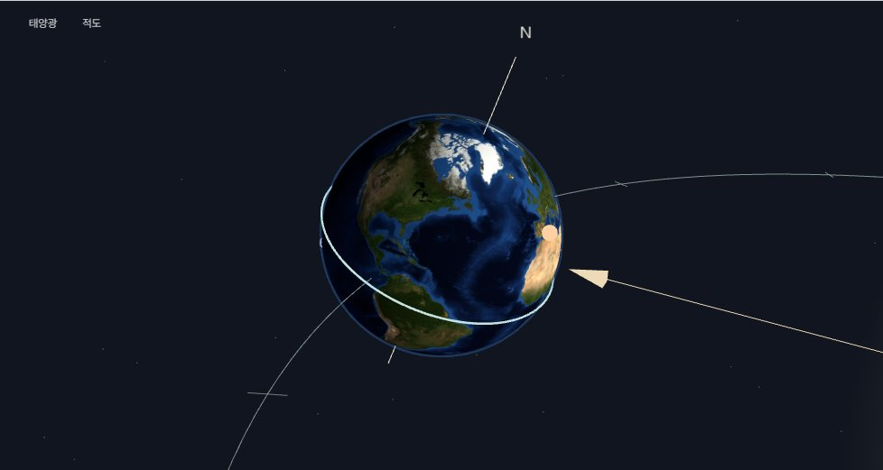
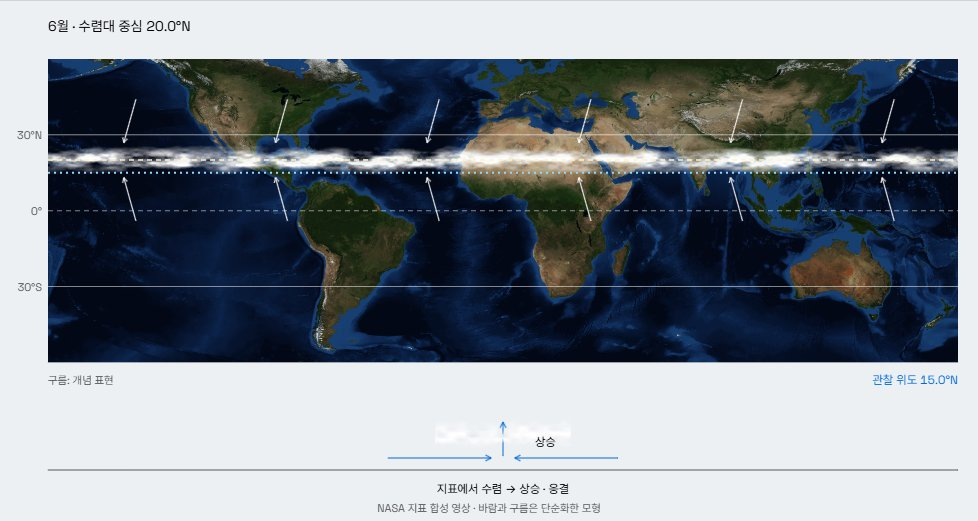
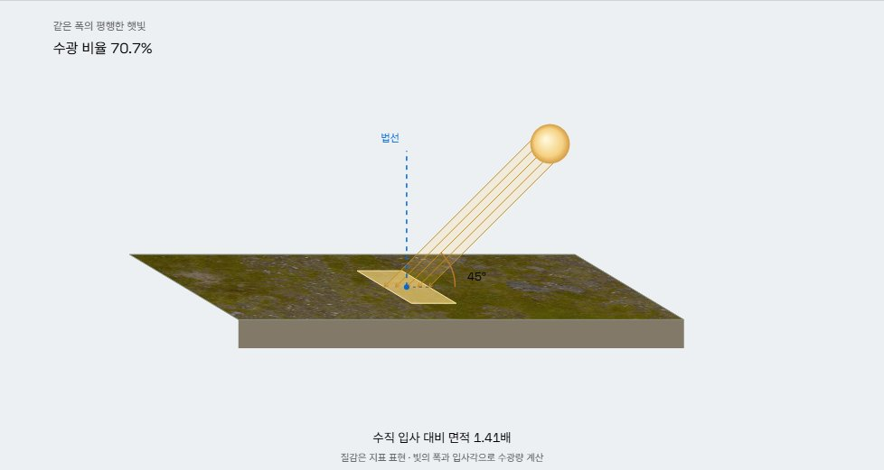
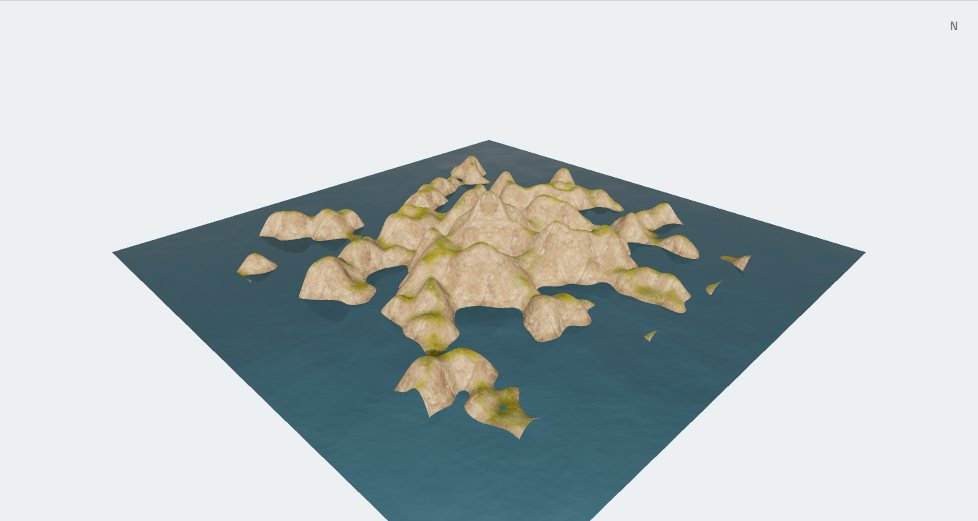
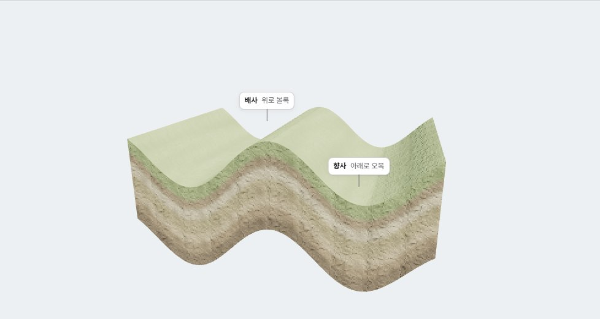
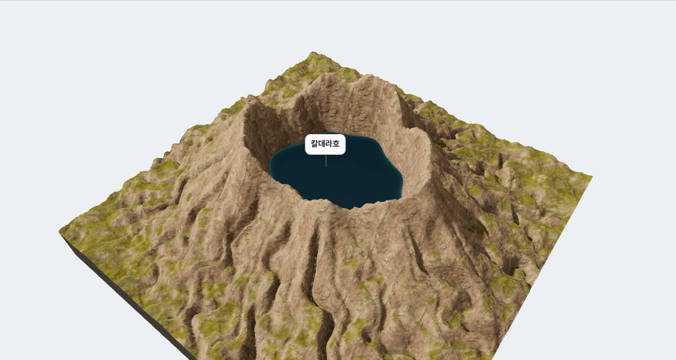
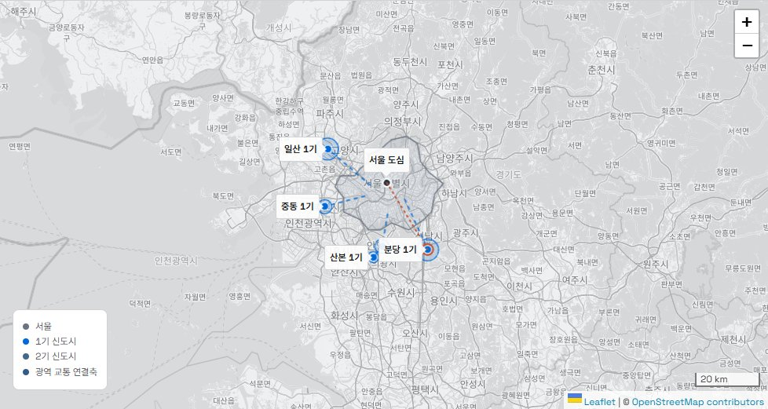

지리 시뮬레이터

지구 공전과 계절
같은 태양, 다른 계절. 자전축과 공전 위치를 바꾸며 두 반구에 도달하는 햇빛을 비교해 보세요.

적도 수렴대의 이동
계절을 따라 움직이는 비의 띠. 한 해를 돌려 보며 열대 지역의 우기와 건기가 나타나는 이유를 찾습니다.

태양 고도와 일사량
태양을 조금 더 높이 올려 보세요. 같은 빛이 닿는 면적이 줄어들면서 지표가 받는 에너지가 달라집니다.

지형 만들기 스튜디오
땅을 높이고, 골짜기를 깎고, 바닷물을 채웁니다. 직접 만든 지형을 단면으로 잘라 변화의 흔적을 살펴보세요.

지형 형성 작용
솟아오르고, 휘어지고, 깎여 나갑니다. 눈에 보이지 않을 만큼 긴 시간의 변화를 한 단계씩 펼쳐 봅니다.

세계 지형 탐구
화산의 분화구부터 빙하가 남긴 골짜기까지. 익숙한 풍경을 되감아 그 풍경을 만든 과정을 관찰합니다.

서울 대도시권의 확장
집과 일터 사이를 잇는 교통망. 신도시와 광역 교통의 확장이 대도시권을 어떻게 바꾸는지 지도 위에서 읽습니다.
사용 방법
조건을 바꾸기 전에 어떤 변화가 일어날지 생각해 보세요.
각도, 계절, 지형. 한 번에 하나의 조건만 바꾸어 비교하세요.
눈으로 발견한 차이를 바탕으로 변화의 이유를 설명하세요.